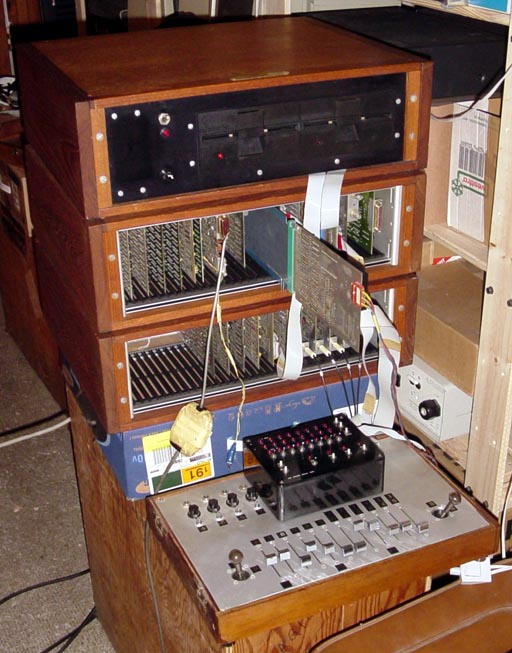
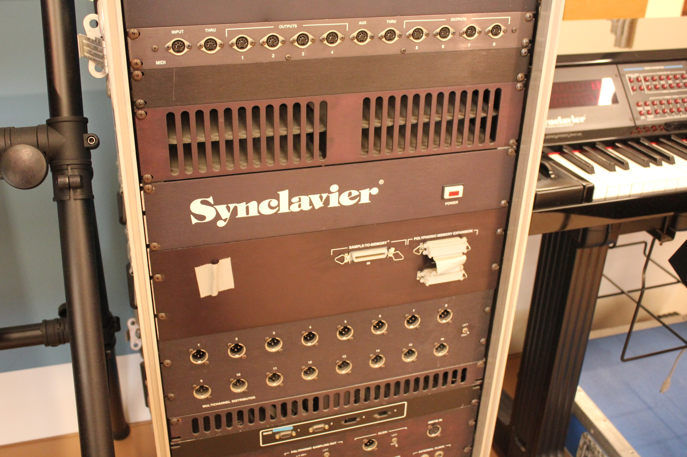
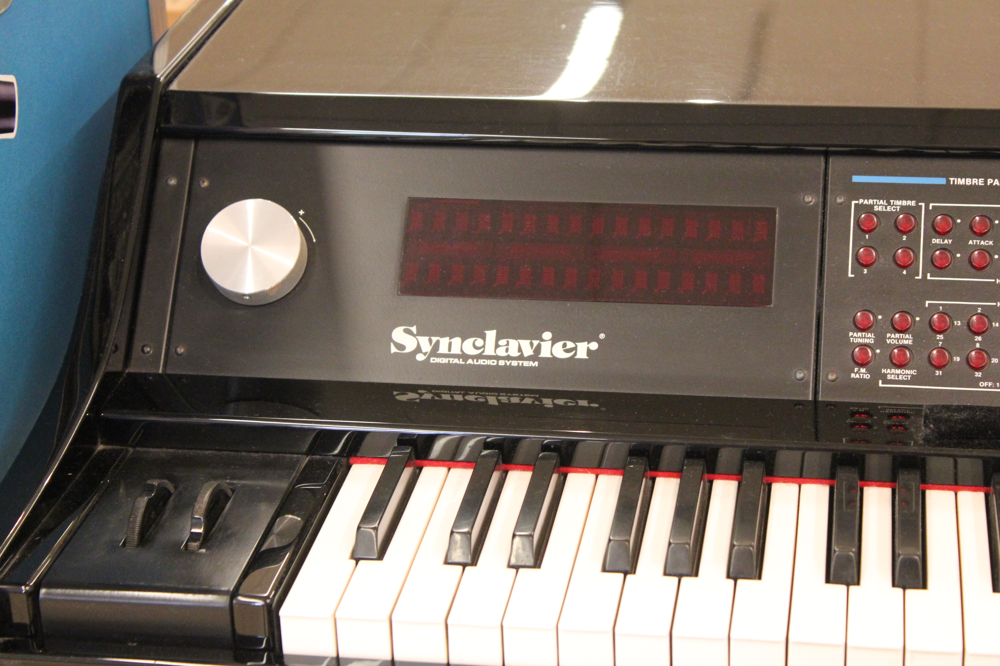
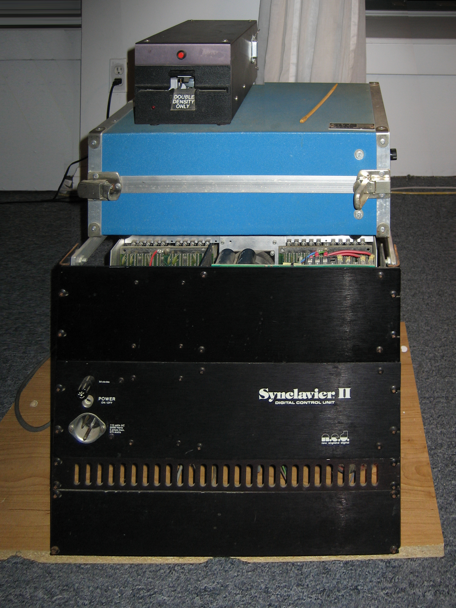
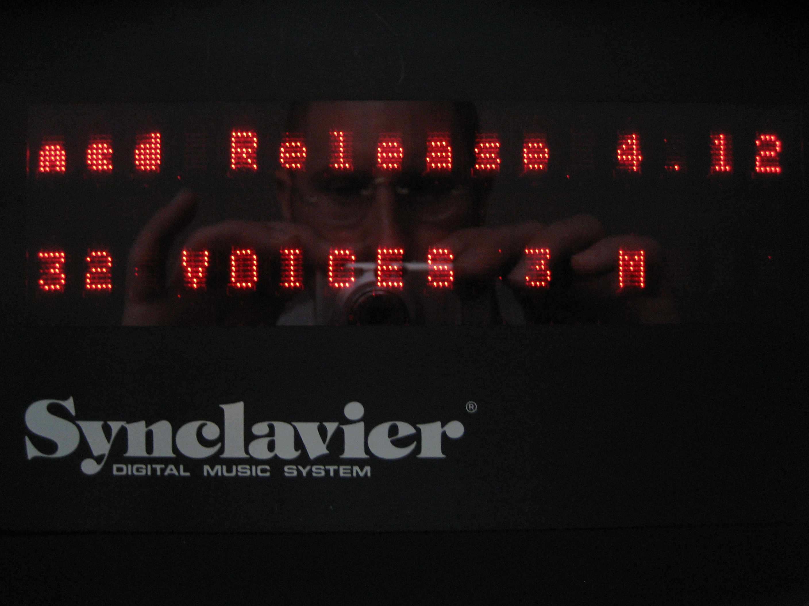

NED Synclavier
Draw your sound with a light pen — the first complete digital music workstation

Overview
The Synclavier is an early digital synthesizer, polyphonic digital sampling system, and music workstation by New England Digital Corporation (Norwich, Vermont). Originating at Dartmouth College (Jon Appleton, Sydney A. Alonso, Cameron Jones), it was first released in 1977–78 and refined through the early 1990s. Only about 20 Synclavier I units were built, primarily sold to universities; the Synclavier II (1980) and subsequent models (PSMT, 3200, 6400, 9600, Tapeless Studio) expanded the system through the 1980s at prices from $25,000 to $200,000.
### Draw your sound with light
The Synclavier II introduced a VT640 graphic terminal whose light pen was the primary editing tool for additive synthesis. Composers drew harmonic spectra and envelope shapes directly on the CRT — sweeping the pen across a glowing grid of partials to construct timbres from scratch, or shaping a volume envelope by dragging a curve on screen. This was a direct-manipulation audio editing interface years before the mouse-driven DAW, and radically different from the knob-and-slider paradigm of analog synthesizers.
### The keyboard that feels you back
Later Synclavier models (PSMT onward, 1984) used the Velocity/Pressure Keyboard (VPK), licensed from Sequential Circuits. The VPK was a weighted wooden keyboard whose keys sensed both velocity (how fast pressed) and continuous pressure (channel aftertouch). A finger pressing harder on a held note could bend pitch, add vibrato, shimmer, or open a filter — every key became a continuous expressive surface. The VPK signaled the transition from on/off organ-style keyboards to expressive touch as a computer input for professional musicians.
### Why it belongs
The Synclavier combines two genuinely novel interaction paradigms — light-pen waveform editing (drawing sound by hand on a CRT) and continuous-key-pressure sensing (aftertouch as expressive input). Both are distinct from every existing exhibit in the museum's music HCI section. When the Fairlight CMI pioneered light-pen menu selection for sampling, the Synclavier was the system that used a light pen as a creative drawing tool for sound construction itself. The VPK's continuous aftertouch — where the computer reads not just that you pressed a key but how much you are still pressing it — is a richer input channel than the velocity-only keyboard of the Fairlight or the binary key-switch of the TB-303.
Deep dive
Team & pioneers
- Jon Appleton. Professor of Digital Electronics, Dartmouth College; initiator of the Dartmouth Digital Synthesizer project.
- Sydney A. Alonso. Co-founder, New England Digital; hardware architect who designed the custom ABLE 16-bit minicomputer.
- Cameron Jones. Co-founder, New England Digital; software programmer who later revived the Synclavier trademark.
- Denny Jaeger. Music producer who influenced Synclavier II design and FM synthesis implementation.
Media



